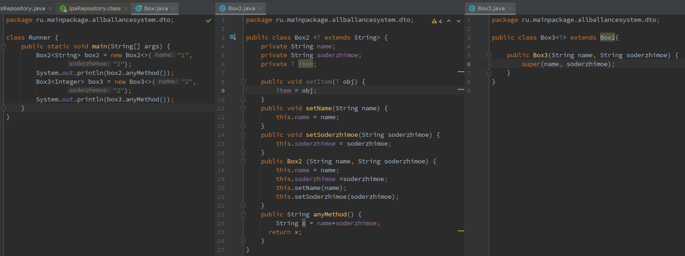
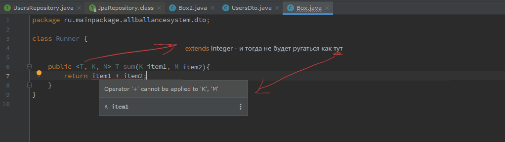
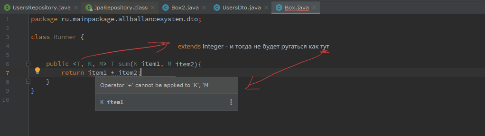

< T > - это тип, который будет установлен позже. Разобрать - Box3: super(name, soderzhimoe)

Также можно генерализировать отдельные методы в Java. Например:



Также можно генерализировать отдельные методы в Java. Например:
